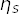

Annotated Example: Two-Point Correlator¶
Introduction¶
The simplest use of corrfitter is calculating the
amplitude and energy of the ground state in a single
two-point correlator. Here we analyze an  propagator where the
source and sink are the same.
The one slightly non-obvious aspect of this fit is its use of
log-normal priors for the energy differences dE between successive
states in the correlator. As discussed in Postive Parameters,
this choice imposes an order on the states in relation to the
fit parameters by forcing all dE values to be positive.
Any such restriction helps stabilize a fit, improving both
efficiency and the final results.
Another design option that helps stabilize the fit is to do a series of
fits, with increasing number N of states in the fit function, where
the results from the N-1 fit are used by the fitter as the starting
point (p0) for the N fit. The initial fits are bad, but this procedure
helps guide the fit parameters towards sensible values as the number of states
increases. See Priming Fits for more discussion.
The source code (etas.py) and
data file (etas-Ds.data) are included with the corrfitter
distribution, in the examples/ directory.
The data are from the HPQCD collaboration.
Code¶
Following the template outlined in Basic Fits, the entire code is:
from __future__ import print_function # makes this work for python2 and 3
import collections
import gvar as gv
import numpy as np
import corrfitter as cf
def main():
data = make_data(filename='etas.data')
fitter = cf.CorrFitter(models=make_models())
p0 = None
for N in [2, 3, 4]:
print(30 * '=', 'nterm =', N)
prior = make_prior(N)
fit = fitter.lsqfit(data=data, prior=prior, p0=p0)
print(fit)
p0 = fit.pmean
print_results(fit)
fastfit = cf.fastfit(G=data['etas'], ampl='0(1)', dE='0.5(5)', tmin=3, tp=64)
print(fastfit)
def make_data(filename):
""" Read data, compute averages/covariance matrix for G(t). """
return gv.dataset.avg_data(cf.read_dataset(filename))
def make_models():
""" Create corrfitter model for G(t). """
return [cf.Corr2(datatag='etas', tp=64, tmin=5, a='a', b='a', dE='dE')]
def make_prior(N):
""" Create prior for N-state fit. """
prior = collections.OrderedDict()
prior['a'] = gv.gvar(N * ['0(1)'])
prior['log(dE)'] = gv.log(gv.gvar(N * ['0.5(5)']))
return prior
def print_results(fit):
p = fit.p
E = np.cumsum(p['dE'])
a = p['a']
print('{:2} {:15} {:15}'.format('E', E[0], E[1]))
print('{:2} {:15} {:15}\n'.format('a', a[0], a[1]))
if __name__ == '__main__':
main()
Here the Monte Carlo data are read by make_data('etas.data') from file
etas.data. This file contains 225 lines, each
with 64 numbers, of the form:
etas 0.305044 0.0789607 0.0331313 ...
etas 0.306573 0.0802435 0.0340765 ...
...
Each line is a different Monte Carlo estimate of the
correlator for t=0…63. The mean values and covariance matrix
are computed for the 64 elements of the correlator using
gvar.dataset.avg_data(), and the result is stored in
data['etas'], which is an array of Gaussian random
variables (objects of type gvar.GVar).
A corrfitter.CorrFitter object, fitter, is created for a single two-point
correlator from a list of models created by make_models(). There
is only one model in the list because there is only one correlator.
It is a Corr2 object which specifies that:
the key (datatag) for extracting the correlator from the data dictionary is
'etas'; the propagator is periodic with period 64; each correlator
contains data for t values ranging from 0 to 63; only values
greater than or equal to 5 and less than 64-5 are fit; the
source and sink amplitudes are the same and labeled by 'a' in
the prior; and the energy differences between successive states
are labeled 'dE' in the prior.
Fits are tried with N states in the fit function, where N
varies from 2 to 5. Usually N=2 is too small, resulting in
a poor fit. Here we will find that results have converged by
N=3.
A prior, containing a priori estimates for the fit parameters,
is contructed for each N by make_prior(N). The amplitude priors,
prior['a'][i],
are assumed to be 0±1, while the differences between successive
energies are taken to be, roughly, 0.5±0.5. These are broad priors,
based upon preliminary fits of the data.
We want to use log-normal
statistics for the energy differences, to guarantee that
they are positive (and the states ordered, in order of
increasing energy), so we use prior['logdE'] for
the logarithms of the differences — instead of
prior['dE'] for the differences themselves — and take the logarithm
of the prior.
The fit is done by fitter.lsqfit() and
print_results(fit) prints results for the first two states after
each fit (that is, for each N). Note how results from
the fit to N terms is used as the starting point for the
fit with N+1 terms, via parameter p0. As mentioned above,
this speeds up the larger fits and also helps to stabilize them.
Results¶
The output from this fit code is:
============================== nterm = 2
Least Square Fit:
chi2/dof [dof] = 0.98 [28] Q = 0.49 logGBF = 481.95
Parameters:
a 0 0.21854 (15) [ 0.0 (1.0) ]
1 0.2721 (46) [ 0.0 (1.0) ]
log(dE) 0 -0.87637 (28) [ -0.7 (1.0) ]
1 -0.330 (12) [ -0.7 (1.0) ]
---------------------------------------------------
dE 0 0.41629 (11) [ 0.50 (50) ]
1 0.7191 (83) [ 0.50 (50) ]
Settings:
svdcut/n = 1e-12/0 tol = (1e-08*,1e-10,1e-10) (itns/time = 21/0.0)
E 0.41629(11) 1.1354(83)
a 0.21854(15) 0.2721(46)
============================== nterm = 3
Least Square Fit:
chi2/dof [dof] = 0.68 [28] Q = 0.89 logGBF = 483.08
Parameters:
a 0 0.21836 (18) [ 0.0 (1.0) ]
1 0.15 (12) [ 0.0 (1.0) ]
2 0.308 (51) [ 0.0 (1.0) ]
log(dE) 0 -0.87660 (30) [ -0.7 (1.0) ]
1 -0.56 (28) [ -0.7 (1.0) ]
2 -0.92 (53) [ -0.7 (1.0) ]
---------------------------------------------------
dE 0 0.41620 (12) [ 0.50 (50) ]
1 0.57 (16) [ 0.50 (50) ]
2 0.40 (21) [ 0.50 (50) ]
Settings:
svdcut/n = 1e-12/0 tol = (1e-08*,1e-10,1e-10) (itns/time = 16/0.0)
E 0.41620(12) 0.99(16)
a 0.21836(18) 0.15(12)
============================== nterm = 4
Least Square Fit:
chi2/dof [dof] = 0.68 [28] Q = 0.89 logGBF = 483.08
Parameters:
a 0 0.21836 (18) [ 0.0 (1.0) ]
1 0.15 (12) [ 0.0 (1.0) ]
2 0.308 (51) [ 0.0 (1.0) ]
3 -2e-06 +- 1 [ 0.0 (1.0) ]
log(dE) 0 -0.87660 (30) [ -0.7 (1.0) ]
1 -0.56 (28) [ -0.7 (1.0) ]
2 -0.92 (53) [ -0.7 (1.0) ]
3 -0.7 (1.0) [ -0.7 (1.0) ]
---------------------------------------------------
dE 0 0.41620 (12) [ 0.50 (50) ]
1 0.57 (16) [ 0.50 (50) ]
2 0.40 (21) [ 0.50 (50) ]
3 0.50 (50) [ 0.50 (50) ]
Settings:
svdcut/n = 1e-12/0 tol = (1e-08*,1e-10,1e-10) (itns/time = 34/0.0)
E 0.41620(12) 0.99(16)
a 0.21836(18) 0.15(12)
E: 0.41624(11) ampl: 0.047704(71) chi2/dof [dof]: 0.9 0.8 [57] Q: 0.8 0.9
These fits are very fast — a small fraction of a second each on a laptop.
Fit results converge by N=3 states. The amplitudes and energy differences
for states above the first three are essentially identical to the prior
values; the Monte Carlo data are not sufficiently accurate to add any new
information about these levels. The fits for N>=3 are excellent, with
chi-square per degree of freedom (chi2/dof) of 0.68. There are only
28 degrees of freedom here because the fitter, taking advantage of the
periodicity, folded the data about the midpoint in t and averaged,
before fitting. The ground state energy and amplitude are determined to
a part in 1,000 or better.
Fast Fit and Effective Mass¶
The last two lines in the main() function of the code illustrate the use
of corrfitter.fastfit to get a very fast results for the lowest-energy
state. As discussed in Very Fast (But Limited) Fits, corrfitter.fastfit
provides an alternative to the multi-exponential fits discussed above when
only the lowest-energy parameters are needed. The method used is similar to a
traditional effective mass analysis except that estimates for contributions
from excited states are generated from priors and removed from the correlator
before determining the effective mass. This allows the code to use much
smaller t values than in the traditional approach, thereby obtaining
results that rival the multi-exponential fits.
In this example, corrfitter.fastfit is used to analyze the two-point
correlator stored in array data['etas']. The amplitudes for different
states are estimated to have size 0±1, while the spacings between energies
(and between the first state and 0) are estimated to be 0.5±0.5. The code
averages results form all t values down to tmin=3. Setting tp=64
indicates that the correlator is periodic with period 64.
The last line of the output summarizes the results of the fast fit. The
energy and amplitude are almost identical to what was obtained from the
multi-exponential fits (note that fastfit.ampl is the same as
fit.a[0]**2, which has value 0.047681(79)). corrfitter.fastfit
estimates the energy and amplitude for each t greater than tmin, and
then averages the results. The consistency of results from different ts
is measured by the chi-squared of the averages. The chi-squared per degree of
freedom is reported here to be 0.8 for the E average and 0.9 for the
ampl average, indicating that there is good agreement between different
ts.
While a fast fit is easier to set up, multi-exponential fits are usually more
robust, and provide more detailed information about the fit. One use for fast
fits is to estimate the sizes of parameters for use in designing the priors
for a multi-exponential fit. There are often situations where a priori
knowledge about fit parameters is sketchy, especially for amplitudes. A fast
fit to data at large t can quickly generate estimates for both amplitudes
and energies, from which it is then easy to construct priors. In the code
above, for example, we could replace make_prior(N)
by alt_make_prior(N, data['etas']) where:
def alt_make_prior(N, G):
fastfit = cf.fastfit(G=G, tmin=24, tp=64)
da = 2 * fastfit.ampl.mean ** 0.5
dE = 2 * fastfit.E.mean
prior = collections.OrderedDict()
prior['a'] = [gv.gvar(0, da) for i in range(N)]
prior['log(dE)'] = gv.log([gv.gvar(dE, dE) for i in range(N)])
return prior
This code does a fast fit using data from very large t, where priors for
the excited states are unimportant. It then uses the results to create priors
for the amplitudes and energy differences for all states, assuming that the
ground state values are either larger, or smaller by no more than roughly a
factor of two. This customized prior gives results that are almost identical
to what was obtained using the original prior, above (in part because
the original prior is pretty sensible to begin with).
Designing a prior using corrfitter.fastfit would be even more
useful when multiple sources and sinks are involved, as in a matrix fit.